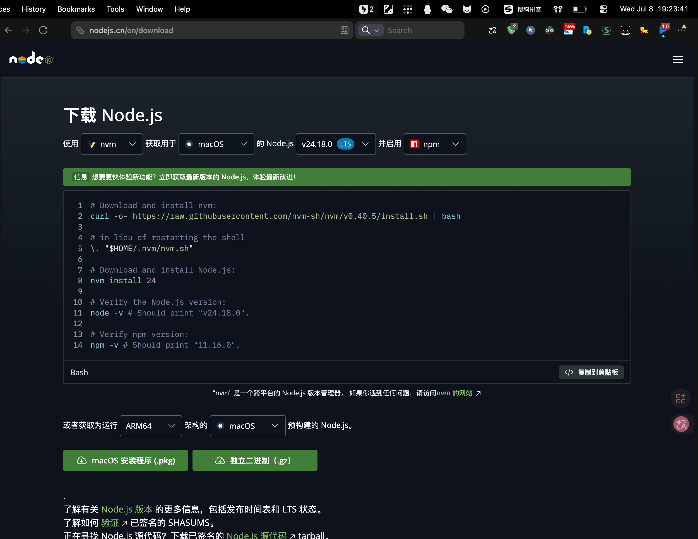
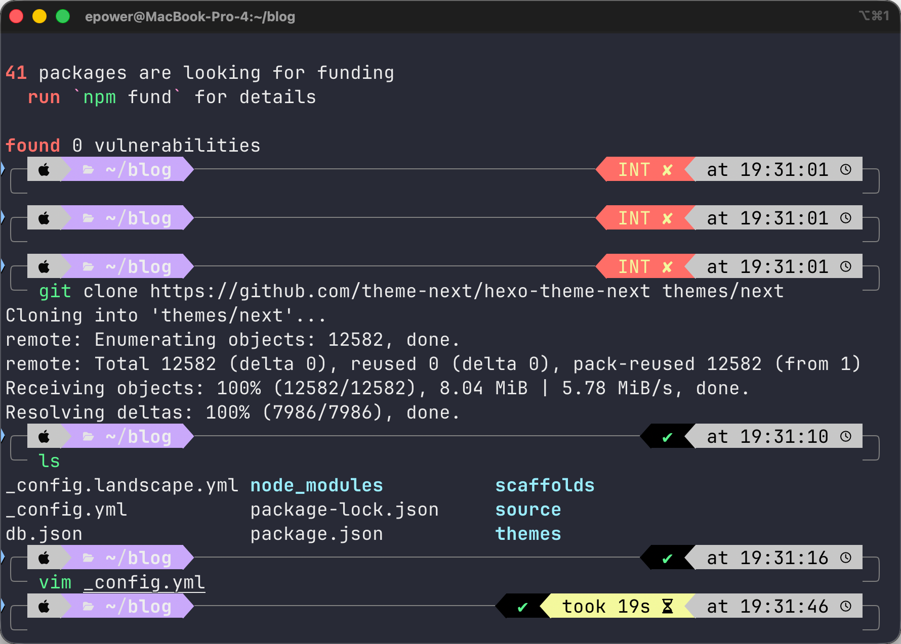

1 Web开发环境实验报告
每份实验报告应包含以下7个部分：
一、实验目的
- 安装并运行一个桌面网络软件（Cisco Packet Tracer）；
- 理解C/S、B/S、P2P等不同网络软件类型与架构；
- 通过动手搭建一个简单的局域网，直观感受网络软件通信的基本原理。
2、实验环境
- 操作系统：Windows 10/11 on arm
- 网络：需要互联网连接以下载软件
- 软件：Cisco Packet Tracer（免费，需注册Cisco NetAcad账号
3、实验过程（图文并茂）
打开浏览器，访问https://www.netacad.com/resources/lab-downloads?courseLang=zh-CN并注册
下载Packet Tracer x64

安装并启动软件, 登录步骤一注册的账号
在左侧设备工具栏中，找到 “Network Devices” 下的 “Switches” （交换机图标）。
将 “2960” 型号的交换机拖拽到中央工作区。
再找到 “End Devices” （终端设备），将两台 “PC” （如 PC-PT ）拖拽到工作区。 4.2 连接设备
点击设备工具栏中的 “Connections” （连线工具，图标为闪电或线缆）。
选择 “Copper Straight-Through” （直通线）。
依次点击 PC1 → 选择 FastEthernet0 端口 → 再点击 交换机 → 选择某个端口（如 FastEthernet0/1 ）。
用同样的方法，将 PC2 连接到交换机的另一个端口（如 FastEthernet0/2 ）。
双击PC1，在弹出的窗口中选择 “Desktop” 选项卡。
点击 “IP Configuration” 。
在IP Address栏中输入 192.168.1.1 ，Subnet Mask自动填充为 255.255.255.0 。
关闭PC1的配置窗口。
双击PC2，同样进入 Desktop → IP Configuration。
将IP Address设为 192.168.1.2 ，子网掩码保持 255.255.255.0 。 4.4 测试网络连通性
双击PC1，进入 Desktop → Command Prompt （命令行）。
输入命令： ping 192.168.1.2
观察返回结果：
 步骤五：观察数据包流动
步骤五：观察数据包流动在Packet Tracer右下角的仿真控制栏中，点击 “Simulation” （仿真）模式。
点击 “Add Simple PDU” （添加简单数据包）按钮（信封图标）。
先点击 PC1 作为源设备，再点击 PC2 作为目标设备。
点击右下角的 “Auto Capture / Play” （自动捕获/播放）按钮。
观察数据包从PC1出发，经过交换机，到达PC2的完整过程。

点击某个数据包事件，可以查看数据包在各层（应用层、网络层、数据链路层等）的封装细节。

4、实验结果
IEEE:
- The STP process sends out a configuration BPDU.
- The device encapsulates the PDU into an Ethernet frame.
- The Switch unicasts the frame out to the access port.
- The STP process sends out a configuration BPDU.
- The device encapsulates the PDU into an Ethernet frame.
- The Switch unicasts the frame out to the access port
FastEthernet:
- FastEthernet0/1 sends out the frame.
- FastEthernet0/3 sends out the frame.
7、心得体会
技术层面：通过本次实验，我直观地理解了C/S架构的工作模式——客户端主动发起请求，服务器（或中间网络设备）响应并转发数据。当我从PC1执行ping 192.168.1.2命令时，数据包从源设备出发，经过交换机的转发最终到达目标设备，整个过程清晰地展示了C/S架构中“请求-响应”的基本通信逻辑。同时，Packet
Tracer作为一款网络仿真软件，让我无需购买昂贵的硬件设备就能搭建网络拓扑、观察数据包传输。在仿真模式下观察数据包的逐层封装与解封装过程，让我对OSI七层模型有了直观认识——数据从应用层产生，逐层向下添加头部信息，最终以帧的形式从物理端口发出。这种“看得见”的学习方式，比单纯背诵协议层次要深刻得多。
思政层面：通过本次实验，我了解到目前主流的网络仿真工具大多来自国外厂商（如Cisco的Packet Tracer）。与此同时，国内也有华为eNSP、H3C HCL等国产网络仿真平台在快速发展。作为未来的软件工程师，我应当关注国产软件的成长，在学习和工作中优先了解和使用国产工具，为国产软件生态建设贡献力量。此外，本次实验也让我认识到网络通信中数据安全的重要性——每一个数据包的传输都可能涉及敏感信息。作为一名未来的信息技术从业者，我不仅要掌握技术技能，更要树立技术责任感，在设计和维护网络系统时始终把数据安全和用户隐私放在首位。
Web软件开发环境报告
一、实验目标
- 安装并运行一个Web博客软件（本实验选用 Hexo 静态博客框架）；
- 了解和掌握Web开发环境的基础安装与配置（Node.js、npm、Git）；
- 理解Web软件的B/S架构特点以及静态站点与动态站点的区别
二 实验环境
OS: MacOS Tahoe 26
所需软件: Console
三 实验步骤
步骤一：安装Node.js与npm

https://npm.nodejs.cn/cli/v11/configuring-npm/install
网页内部自带文档,
步骤二 安装git
1 | brew install git |
步骤三 安装hexo
1 | npm install hexo-cli -g |
这里出了点问题, npm install 的时候忘记给
sudo 权限了
步骤四 更改主题

步骤五 生成blog
发现不能识别markdown中的引用和mathjax公式
解决:
1.使用pandoc插件替代
1 | npm uninstall hexo-renderer-marked --save |
2.使用img插件替代
1 | # 卸载旧的可能已失效的插件 |
四 实验结果

实验三 代码编辑器
我早已是VSCode重度用户, 无需多言
![[Pasted image 20260711190752.png]]
![[Pasted image 20260711190851.png]]
实验四 Web站点构建
7.4 执行部署 执行以下命令将博客部署到GitHub Pages： 或分步执行： 部署过程中，系统会提示你输入GitHub的用户名和密码（或Personal Access Token）。 7.5 访问你的博客 部署完成后，在浏览器中访问： https://你的GitHub用户名.github.io 即可看到你的博客正式上线！ 五、常见问题与排错 npm install hexo-deployer-git –save deploy: type: git repo: https://github.com/你的GitHub用户名/你的GitHub用户名.github.io.git branch: main hexo clean && hexo generate && hexo deploy
![[Pasted image 20260711191252.png]]
并不能推送, 他一直报错configyml文件有错误